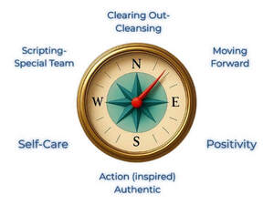

Trade Mark Journal No.2025/032 8 August 2025
UK00004239770 25 July 2025 (9,35,41)

The COMPASS System™ is a heart-led personal development and manifestation framework that empowers individuals to create meaningful, aligned lives by guiding them back to their true soul and life purpose. It blends spiritual insight, mindset transformation, and practical tools to help people shift from limitation to possibility. The acronym C.O.M.P.A.S.S. stands for: Clearing Out (C and O – representing a two-stage process of releasing emotional blocks, limiting beliefs, and energetic clutter), Moving Forward (setting soul-led intentions and taking proactive steps), Positivity (anchoring high-vibration thinking and emotional alignment), Aligned Action (taking inspired steps in harmony with one’s inner guidance), Self-Care (nourishing the mind, body, and spirit as an act of empowerment), and Scripting with Spirit (intentionally co-creating with one’s spiritual support team or inner divine wisdom). The system helps people align deeply with their authentic path, manifest with clarity, and navigate life with inner trust and purpose. It is delivered through coaching programmes, online courses, retreats, guided meditations, journals, and intuitive mentoring.
- Class 9
- Downloadable digital music; Digital music downloadable from the Internet; Digital books downloadable from the Internet; Digital music downloadable provided from MP3 internet websites; Digital music downloadable provided from the internet; Downloadable computer software for use as a digital wallet; Digital recordings; Digital music downloadable provided from MP3 internet web sites; Downloadable digital music provided from MP3 Internet web sites; Digital audio servers; Digital music downloadable provided from a computer database or the internet; Audio digital discs; Digital video servers; Digital video discs; Downloadable music files; Digital video discs [DVDs]; Digital notepads; Downloadable video files; Digital audio tape players; Downloadable electronic newspapers; Downloadable e-books; Computer software platforms, recorded or downloadable; Downloadable software; Computer software for use on handheld mobile digital electronic devices and other consumer electronics; Downloadable digital image files authenticated by non-fungible tokens (NFTs); Computer application software for streaming audio-visual media content via the internet; Covers for digital media players.
- Class 35
- Business consultancy; Consultancy (Professional business -); Professional business consultancy; Business consultancy (Professional -); Business consulting; Strategic business consultancy; Business planning consultancy; Business management and organisation consultancy; Business management organisation consultancy; Business management and consultancy services; Business management consultancy services; Business consultancy and advisory services; Business advisory and consultancy services; Business consultancy to individuals; Business consulting for enterprises; Business consulting services; Business organisation and management consulting; Business management and organization consultancy services; Business management and consulting; Business management consulting; Consultancy and advisory services in the field of business strategy; Consultancy relating to business organisation; Consultancy relating to business management; Business management and consulting services; Business management consulting services; Professional consultancy relating to business management; Consultancy relating to business management and organisation; Professional business consulting; Consultancy relating to business planning; Business strategy services; Business planning services for enterprises; Business management consultancy in the field of executive and leadership development; Commercial business management; Business management and consultation services; Management consultancy services; Business management and consultation.
- Class 41
- Coaching; Coaching [training]; Sports coaching; Career counselling and coaching; Coaching services; Personal coaching [training]; Life coaching (training); Esports coaching; Sports coaching services; Coaching in the field of sports; Sports tuition, coaching and instruction; Personal coaching services in the field of ballet; Political speech training and coaching; Training or education services in the field of life coaching; Political debate training and coaching; Coaching relating to finance; Coaching in economic and management matters; Educational services in the nature of coaching; Training of sports players; Coaching services for sporting activities; Training of referees; Training of sports teachers; Computerised training in career counselling; Career counselling [training and education advice]; Sports training; Training in sports; Football academy services; Training in the field of business management; Education, teaching and training; Teacher training services; Training in business management; Training consultancy; Education and training in the field of business management; Training in business skills; Career counselling relating to education and training; Meditation training; Training of swimming teachers; Personal trainer services [fitness training]; Staff training services; Training of teachers; Training; Business training; Arranging and conducting of youth soccer training programs; Providing of training, teaching and tuition; Arranging and conducting of youth American football training programs; Training in yoga; Teaching academy services; Medical training and teaching; Career and vocational training; Education and training consultancy; Arrangement of training courses in teaching institutes; Training in philosophy; Team building (education); Fitness training services; Business mentoring services; Career advisory services (education or training advice); Management training consultancy services; Management training services; Arranging and conducting of American football training programs; Training and further training consultancy; Training in catering; Arranging and conducting of soccer training programs; Consultancy relating to physical fitness training; Training in administration; Career counseling [education]; Providing training courses on business management; Education services for managerial staff; Instructional and training services; Conducting training sessions on physical fitness online; Basketball camp services; Arranging professional workshop and training courses; Training of umpires; Training of financial personnel; Conducting training seminars for clients; Courses for the development of consulting skills; Basketball instruction; Sports refereeing and officiating; Personal fitness training services; Personal development training; Personnel training; Organisation of training seminars; Consultancy services relating to the education and training of management and of personnel; Business training consultancy services; Training for parents in parenting skills; Consultancy relating to vocational skills training; Engineering training college services; Organising of business training; Training and instruction; Physical fitness training services; Education and training; Education academy services for teaching acting; Training of personnel in skills relating to typewriting; Training services in the field of project management; Education academy services for teaching construction drafting; Training in the field of advertising; Vocational skills training; Career and vocational counselling; Business training services; Exercise [fitness] training services; Courses (Training -) relating to management; Business training provided through a game; Aerobics training services; Training in the field of real estate management; Fitness and exercise training services; Training services relating to management consultancy; Health and fitness training; Training services; Organisation of training courses; Organisation of training; Health and wellness training; Training services relating to business management; Provision of training and education; Provision of education and training; Academies [education]; Linguistic education and training services; Education services relating to vocational training; Guidance (Vocational -) [education or training advice]; Vocational guidance [education or training advice]; Computer education training; Education and instruction; Computer education training services; Education and instruction services; University education services; Club education services; Education services relating to business training; Services of schools [education]; Education and training services in relation to business management; Education and training in the field of music and entertainment; Sports education services; Education services; Health education; Educational services for providing courses of education; Educational and teaching services; Management of education services; Management education services; Physical education instruction; Educational and training services; Education and training services in the field of occupational health and safety; Pre-school education; Entertainment, education and instruction services; Education and training in the field of occupational health and safety; Education services for imparting language teaching methods; Organization of education competitions; Professional consultancy relating to education; Physical education services; Physical education; Education and training in the field of automotive engineering; Physical fitness education services; Vocational education in the field of mechanics; Kindergarten services [education or entertainment]; Singing education; Educational and training services relating to sport; Adult education services; Provision of education courses; Education services relating to yoga; Education and training services in relation to real estate management; Boarding school education; Vocational training services; Educational and training programs in the field of risk management; Music education; Vocational training; Providing of education; Residential education courses; Providing continuing dental education courses; Education examination; School services for the teaching of art; Medical education services; Educational and training services relating to healthcare; Educational services for teaching acting; Education services relating to nutrition; Providing continuing medical education courses; Musical education services; Adult education services relating to management; Providing continuing nursing education courses; Career information and advisory services (educational and training advice); Education services relating to the training of personnel in food technology; Provision of training courses in personal development; Education, entertainment and sport services; Physical health education; Online education services; Education services relating to meditation; Research in the field of education; Development of educational courses and examinations; Vocational education relating to self-defence; Organization of competitions [education or entertainment]; Organising of education seminars; Sporting education services; Competitions (Organization of -) [education or entertainment]; Organization of competitions for education or entertainment; Education services relating to sports; Conducting of educational courses in business management; Educational services for teaching manual writing; Vocational training courses (Provision of -); Educational certification services, namely, providing training and educational examination; Vocational education relating to home safety; Adult education services relating to finance; Education services relating to the development of childrens' mental faculties; Primary education services; Residential education courses relating to archery; Educational services for teaching keyboard writing; Academic mentoring of school age children; Dietary education services; Providing digital music [not downloadable] from MP3 internet websites; Providing digital music [not downloadable] from the internet; Providing digital music [not downloadable] for the internet; Providing digital music [not downloadable] from MP3 internet web sites; Providing digital music [not downloadable] for mp3 internet web sites; Digital music [not downloadable] provided from the internet; Providing digital music from mp3 internet web sites; Providing digital music from the internet; Digital music [not downloadable] provided from mp3 web sites on the internet; Providing digital sound recordings, not downloadable, from the internet.
Mr Chris A Barton